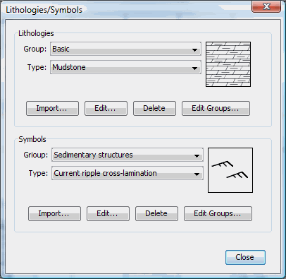
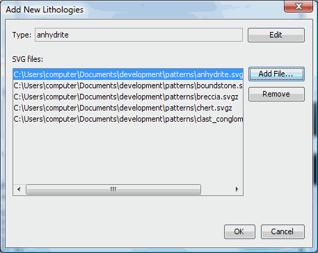
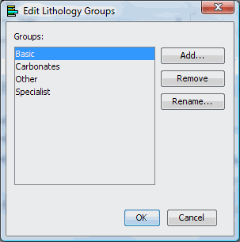

Add
new lithologies/symbols
SedLog allows the user to
import new or edit existing
lithologies and symbols in SVG/SVGZ format. For
details how to create SVG files for patterns and symbols please see here.
After you created your
pattern or symbol in SVG/SVGZ format you need to
import it to SedLog. Go to Tools
and select Lithologies/Symbols
A
window will open which displays the lithologies and symbols (see figure
1). Select to which group you want to add the new lithology or symbol
using the Group combo box.
There are two Group combo
boxes, one for the lithologies and one for the symbols. After selecting
the group to which you want to add the lithology or the symbol, click
on
the Import button (there are
two Import, buttons one for
lithologies
and one for the symbols). A new window will open (see figure 2). Click
the Add File
button. An Open file dialog
will open. Select the file you want to
import and click OK. You can select more that one SVG/SVGZ file(s) by
holding down
the <SHIFT> or <CONTROL> key and clicking on the files you
want to select. The file(s) you selected to
import, will
appear in the SVG files list
box (see figure 2). You can add more or remove files from
the list box. At the Type text
box (see figure 2) you can change the lithology type name of the selected file in the list box. The
default type name is the filename minus
the extension. After you enter a new type name click the Edit
button (see figure 2) to modify the lithology type to the new one you entered. Select OK.
To rename, remove or add new
groups click the Edit Groups
button (the are two Edit Group buttons, one for the lithologies and one
for the symbols) on the Lithologies/Symbols
dialog box (see
figure 1). A dialog box (see
figure 3) will appear with options for renaming, adding or
removing a group.
See Also
How to create new lithologies/symbols

Figure 1. Import, edit, delete
Lithologies and Symbols or edit groups

Figure 2. Add new lithologies
to a group

Figure 3. Edit groups